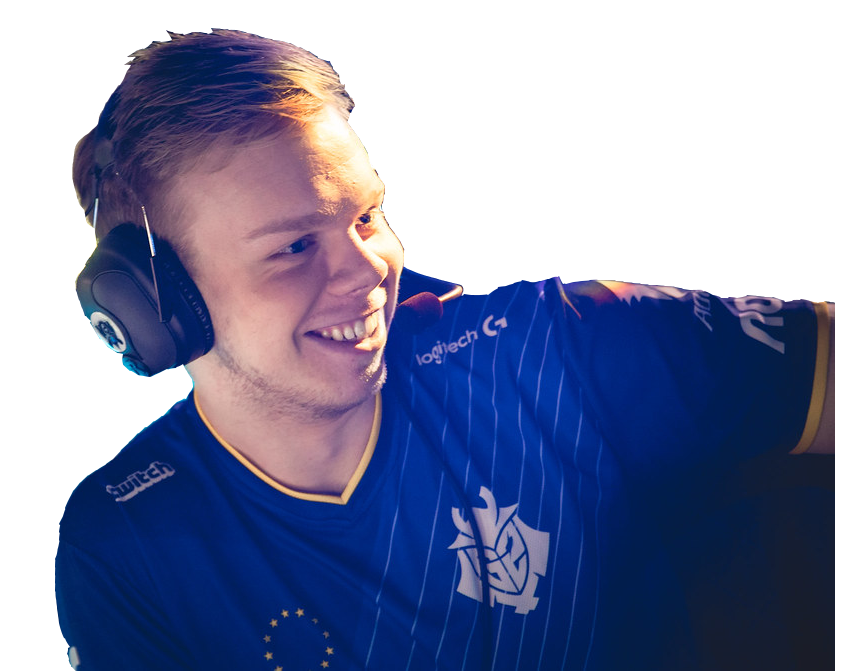

Martin "Wunder" Hansen
- Role: Top
- Known for r/agedlikewine trash talking
- Primarily plays carry champs (Aatrox, Camille, Kled, etc.)
- Was arguably the best player in G2 during LEC Spring Split 2019 and was a key factor in G2's dominance throughout the split
- Personal Awards:
- 2018 Rift Rivals (NA vs EU) MVP
- Previous Teams:
- 4everzenzyg (June 2014 - Nov 2014)
- SK Gaming Prime (Jan 2015 - Feb 2015)
- Team Dignitas EU (Feb 2015 - Oct 2015)
- Follow eSports (Oct 2015 - Dec 2015)
- Splyce (Dec 2015 - Nov 2017)
- G2 Esports (Dec 2017 - Present)
- Social Media:
